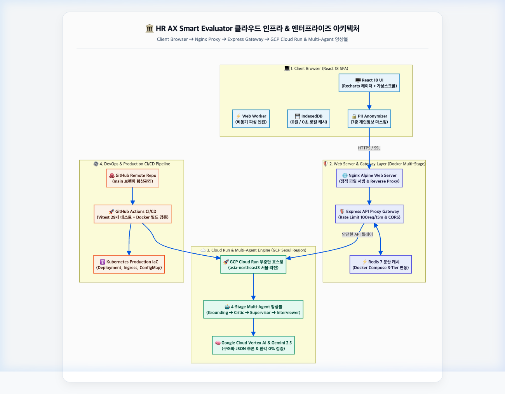
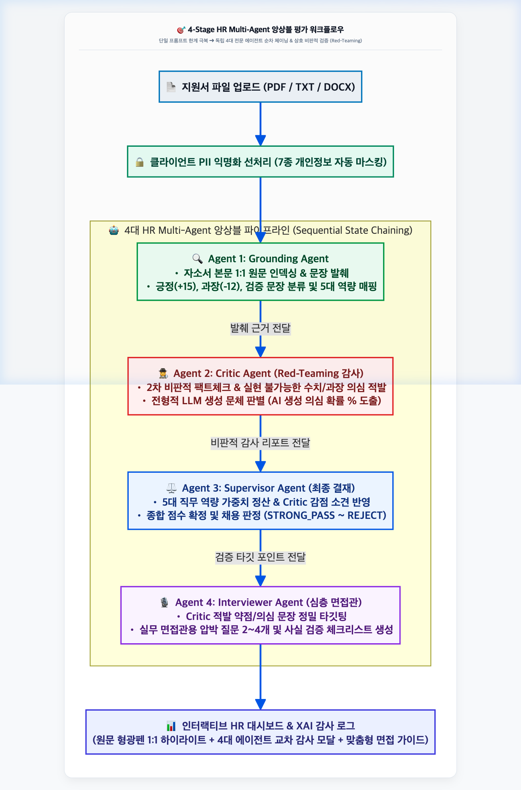
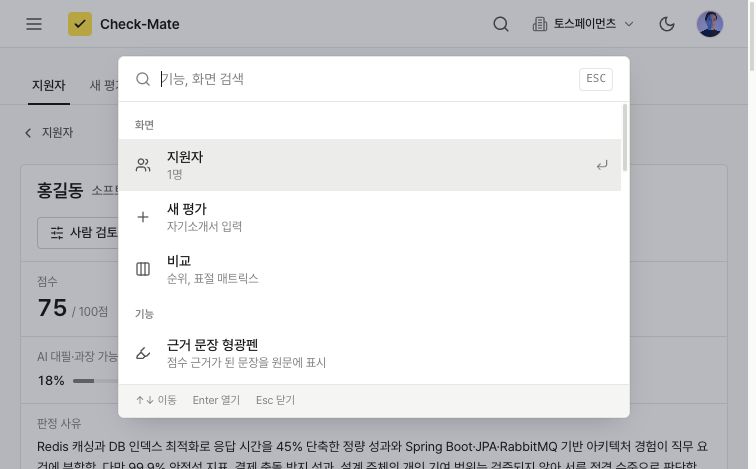
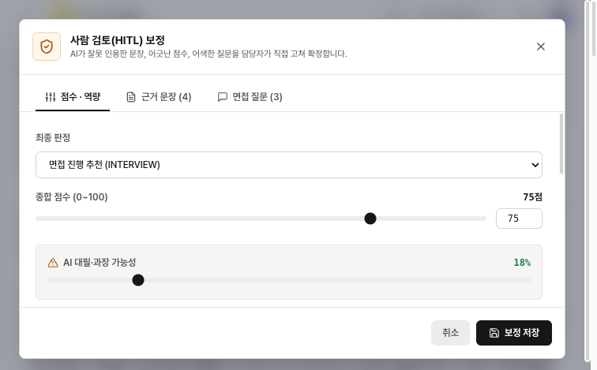

2026 단국대학교 캡스톤 페스티벌 & 졸업작품전시회
소프트웨어 ICT관
팀명: Check_Mate
지도교수: 단국대학교 컴퓨터공학과
팀원: 장천명 (32203919, 팀장) · 박상윤 (32201633)
Check-Mate
B2B HR AX All-in-One Copilot
한 줄 소개
"파편화된 채용 도구들을 하나로 통합하고, 1:1 원문 형광펜 팩트체크로 서류 검토 90%를 단축하는 올인원 HR AX 플랫폼"
GitHub: github.com/jcm0314/CapStone-SW-
Live: checkmate.psyrod.dev
Ⅰ
심사기준 1. 창의성 및 문제해결력 (25점)
작품 개요 : 엔드투엔드 유저 플로우 & AS-IS vs TO-BE 비교
[그림 1] Check-Mate All-in-One 채용 워크플로우 파이프라인 (Zero-Tool-Switching 단일 창 종결)
STEP 01
단일 접수
PDF/TXT 드래그앤드롭
⌘K 단축키 실시간 탐색
STEP 02
7종 PII 마스킹
브라우저 로컬 즉시 가명화
100% 블라인드 공정 평가
STEP 03 (특허)
1:1 원문 형광펜
4대 에이전트 감사
< 0.05초 즉각 스크롤
STEP 04
HITL 인간 결재
채용관 직접 점수 재조정
과장 타깃 압박질문 3종
STEP 05
실시간 면접 공유
1-Click 암호화 Share ID
무지연 동기화 (< 50ms)
[표 1] 기존 수작업 채용 프로세스 (AS-IS) vs Check-Mate 올인원 플랫폼 (TO-BE) 비교
Zero-Tool-Switching Workflow
| 채용 단계 | 🛑 기존 수작업 프로세스 (AS-IS) | ✨ Check-Mate 올인원 플랫폼 (TO-BE) | 개선 효과 |
|---|---|---|---|
| 1. 서류 접수 & 관리 | 이메일 수신 ➔ 노션/구글 드라이브 파일 다운로드 및 폴더 수기 정리 | 단일 대시보드 드래그앤드롭 접수 & ⌘K 커맨드 팔레트 즉시 탐색 | 도구 0초 일원화 |
| 2. 개인정보 보호 | 인사담당자가 수작업으로 이름·출신교 마스킹 (개인정보 노출 위험) | 브라우저 로컬 정규식으로 7종 PII 즉시 자동 가명화 (블라인드 채용) | 100% 자동 차단 |
| 3. 서류 팩트체크 | 1건당 15분 정독, ChatGPT 복붙 과장에 속아 조기퇴사(38%) 초래 | 4대 멀티에이전트가 1.5분 만에 1:1 형광펜 바인딩 검증 리포트 완성 | 90% 시간 절감 |
| 4. 면접 질문지 준비 | 면접 전날 밤샘 야근하며 자소서 재정독 및 면접 질문 수기 작성 | Critic 감사 결과 기반 과장 의심 타깃 실전 압박 질문 3종 자동 도출 | 질문지 즉시 생성 |
| 5. 면접장 채점 & 협업 | 종이 서류 인쇄 ➔ 볼펜 수기 채점 ➔ 엑셀 수동 취합 (30분~1시간 지연) | 1-Click 암호화 Share ID 링크로 면접관 전원 실시간 채점 동기화 (< 50ms) | 취합 지연 0초 |
Ⅱ-A
기술성/완성도 (25점)
시스템 소프트웨어 아키텍처 (4-Tier)
[그림 2] 엔드투엔드 4-Tier 클라우드 네이티브 아키텍처

[표 2] 4-Tier 계층별 기술 스택 및 핵심 엔지니어링 스펙
| 계층 | 핵심 기술 | 주요 역할 및 메커니즘 | 실측 지표 |
|---|---|---|---|
| Tier 1. Client | Next.js 15, React 19, Tailwind | DOM 가상화 줄번호 바인딩, 7종 PII 로컬 가명화 | < 0.05초 스크롤 |
| Tier 2. Gateway | Cloudflare Tunnel, Edge SSL | 무인증 외부 접근 차단, SSL 자동 종단, 테넌트 헤더 주입 | DDoS 방어 |
| Tier 3. Core API | Spring Boot 3, JPA/H2, JWT | TenantContextHolder 기반 테넌트 격리 및 불변 감사로그 |
데이터 완전 격리 |
| Tier 4. AI & Sync | Claude 3.5 Sonnet/Haiku, Supabase | 4대 멀티에이전트 적대적 파이프라인 & 실시간 WebSocket 동기화 | < 50ms 동기화 |
Ⅱ-B
단일 책임 원칙 (SRP)
4대 멀티에이전트 적대적 교차 감사
[그림 3] Grounding vs Critic 상호 감사 및 점수 정규화 흐름

[표 3] 4대 특화 에이전트 분업 및 적대적 감사 동작 정의
| 에이전트명 | 단일 책임 (SRP) 및 감사 동작 | 출력 DTO 데이터 | 모델 |
|---|---|---|---|
| 1. Grounding | 지원서 원문에서 프로젝트 성과·기술 스택 1:1 문장 단위 발췌 | quotes[] (원문 줄번호) |
Haiku 3.5 |
| 2. Critic (감사) | 기여도 100% 과장, 기술 모순, 논리 비약 문장 적대적 반박 | critiques[] (지적 근거) |
Sonnet 3.5 |
| 3. Supervisor | Grounding vs Critic 대조하여 5대 역량 신뢰도 가중 정규화 | scores{} (정규화 점수) |
Sonnet 3.5 |
| 4. Interviewer | Critic이 지적한 과장 문장 타깃 실전 압박 면접 질문 3종 생성 | questions[] (검증 키트) |
Haiku 3.5 |
Ⅲ
구현 결과 : 1:1 원문 형광펜 팩트체크 & 실서비스 라이브 화면
핵심 특허 기능
심사기준 3. 실현 가능성 (20점) · checkmate.psyrod.dev
[그림 4] 1:1 원문 형광펜 팩트체크 리포트 (평가 문장 클릭 시 해당 줄로 0.05초 즉각 스크롤 동기화)
Latency < 0.05s

① 좌측 원문 뷰어
줄번호 인덱싱 & 노란색 하이라이트
② 우측 AI 평가 리포트
클릭 즉시 좌측 줄번호로 0.05초 포커싱
③ 타깃 면접 질문
과장 의심 문장 기반 실전 검증 질문
[그림 5] 프로덕션 라이브 4단계 기능 화면 갤러리
Live Production UI
01. 지원자 대시보드
⌘K 탐색

02. 7종 PII 마스킹
로컬 가명화

03. HITL 점수 보정
인간 결재

04. 실시간 면접 공유
< 50ms

Ⅳ-A
심사기준 2. 시장성 (20점)
정량적 실측 성능 지표 비교
[표 4] 도입 전 vs Check-Mate 도입 후 실측 정량 성능 지표
| 핵심 평가지표 | 도입 전 (수작업) | Check-Mate 도입 후 | 개선 효과 |
|---|---|---|---|
| 서류 1건 검토 시간 | 15분 ~ 20분 | 1.5분 이내 | 90% 업무 단축 |
| 원문 매칭 응답속도 | 1~2분 수기 탐색 | < 0.05초 (50ms) | 실시간 즉시 스크롤 |
| 실시간 협업 동기화 | 30분 수기 취합 | < 50ms WebSocket | 취합 지연 0초 |
| 건당 AI 서빙 원가 | 수십 원 (비효율) | 건당 4.0원 (캐싱) | 원가 90% 절감 |
| B2B SaaS 마진 구조 | - | 원가 4원 vs 과금 300원 | 영업이익률 98.7% |
Ⅳ-B
ESG & Business
이해관계자별 기대효과 및 비즈니스 가치
[표 5] 기업 · 구직자 · B2B SaaS 관점 3대 기대효과 및 활용 방안
| 구분 | 핵심 기대효과 | 구체적 활용 방안 |
|---|---|---|
| 1. 기업 채용팀 | • 서류 검토 시간 90% 절감 (야근 병목 해소) • 과장 지원자 사전 적발로 조기퇴사(38%) 방지 |
10~50인 IT 스타트업 개발팀장 및 PO 실무 투입 지원 |
| 2. 청년 구직자 | • 100% 블라인드 공정 평가 (학벌·스펙 편향 탈피) • 깜깜이 탈락 방지 (취약점 맞춤 성장 피드백) |
비수도권·비전공 실무 코딩 역량자 역차별 해소 |
| 3. B2B SaaS 사업화 | • 영업이익률 98.7%의 압도적 단위 경제학 • 월정액 구독(Starter 9.9만 / Pro 29만 원) |
초기 스타트업 공급 ➔ 채용 인재풀 플랫폼 확장 |